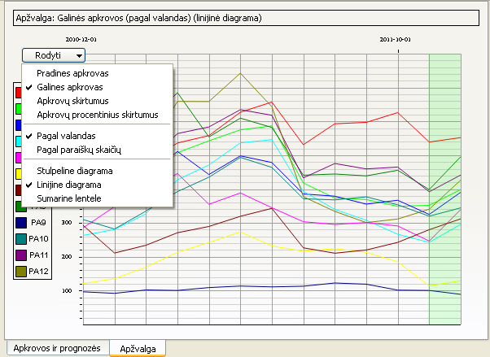

Rezultatų apžvalgos sąsaja

Naudojantis šia sąsaja galima:
- Peržiūrėti visų pasirinktų padalinių ar sistemų apkrovų rezultatus nustatytame laikotarpyje
- Pakeisti rodomų rezultatų peržiūrą į stulpelinę diagramą, linijinę diagramą arba sumarinę lentelę
- Pakeisti rodomų rezultatų peržiūrą į peržiūrą pagal valandas arba paraiškų skaičių
- Pakeisti peržiūrimus rezultatus į pradinių arba galinių apkrovų rezultatus bei į paprastus arba procentinius apkrovų skirtumų rezultatus
Stulpelinėje arba linijinėje diagramose žalsvuose stulpeliuose rodomos prognozės.